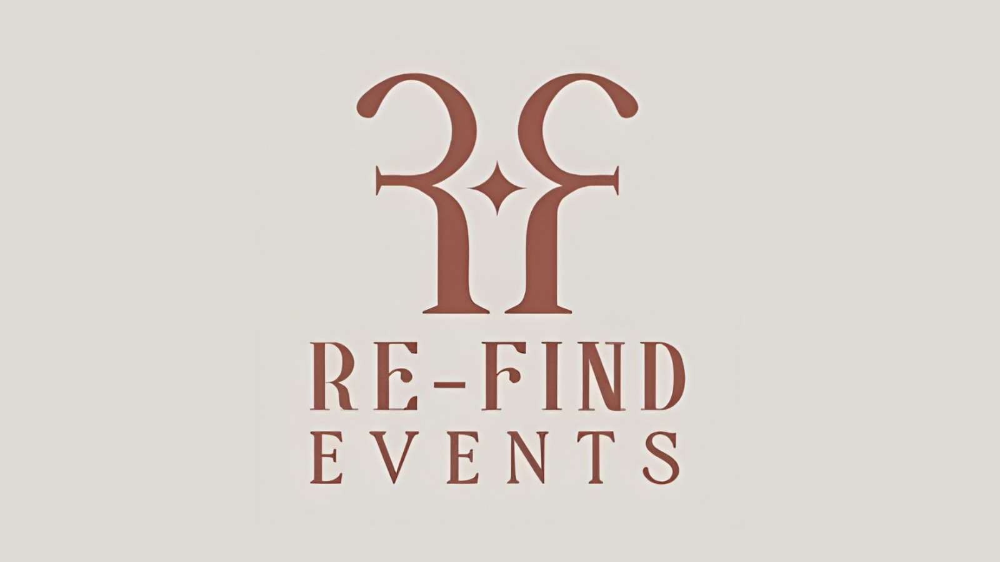
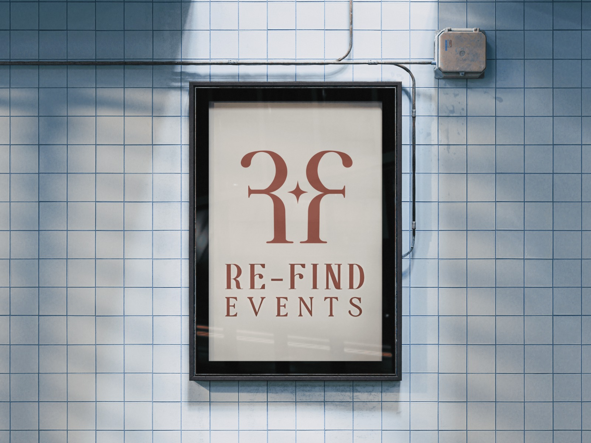

Re-Find Events Branding
The logo for Re-Find Events reflects the brand’s focus on connection and rediscovery through workshops and shared experiences. It uses a mirrored “R” that visually transforms into an “f”, reinforcing the idea of re-finding from a new perspective.
Built with geometric forms, the mark also resembles abstract human figures, symbolizing people coming together. The central meeting point represents interaction, collaboration, and community.
Overall, the design combines simplicity and meaning to capture the essence of bringing people together to connect and grow.
Service
Logo & Identity
Project
Re-Find Events
Tools
Illustrator

